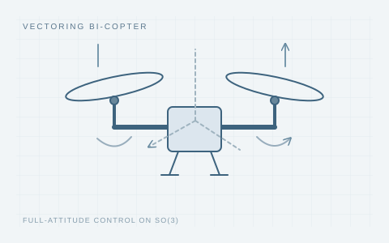

Robust Attitude Controller Design for Bi-copter on SO(3)
International Journal of Control, Automation and Systems, 2025

Concept illustration / 研究示意
Prototype development, multi-body modeling, and robust attitude control for a bi-copter on SO(3).